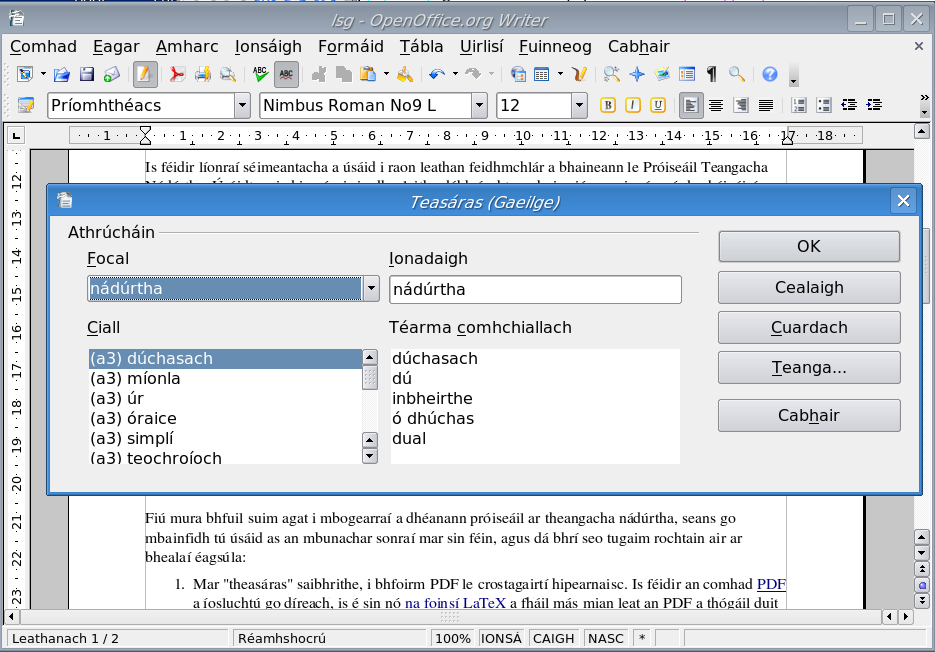

This is the home page for Líonra Séimeantach na Gaeilge
(the “LSG”, or, in English, the
Irish Language Semantic Network), a database consisting of
Irish words and the semantic relationships among them.
A semantic network of this kind is sometimes called a wordnet,
after Princeton's
English-language WordNet,
which was the first-ever full-scale semantic network
(dating back to the mid-1980's).
Semantic networks are much richer
than traditional thesauri, which generally only record (near) synonyms and
sometimes antonyms. The LSG, like most other wordnets, encodes
a richer set of relationships, including hypernyms and hyponyms (broader and narrower terms), meronyms and holonyms (part vs. whole), etc.
 Semantic networks have many applications in Natural Language Processing.
They are used in systems for word sense disambiguation, document
summarization and indexing, and information retrieval. When a semantic
network in one language contains mappings to a second language (ours is
linked to the English WordNet), it can
be used in various ways to improve machine translation.
In general terms, from an artificial intelligence perspective,
a semantic network encodes some
of the “real-world knowledge” that is required for computers to understand and process
texts in a non-trivial way.
Semantic networks have many applications in Natural Language Processing.
They are used in systems for word sense disambiguation, document
summarization and indexing, and information retrieval. When a semantic
network in one language contains mappings to a second language (ours is
linked to the English WordNet), it can
be used in various ways to improve machine translation.
In general terms, from an artificial intelligence perspective,
a semantic network encodes some
of the “real-world knowledge” that is required for computers to understand and process
texts in a non-trivial way.
The image to the left is a depiction of the full LSG
(click it for a full-size version). In fact, this is a simplification
of the true picture — each node in the image represents a whole set
of synonymous words which could be added as additional branches.
Something like this network, but probably thousands of times more complex,
is contained in the brain of every Irish speaker — semantic connections like these are made instantly and intuitively.
The 3D graph browser allows you to “fly” through this network
and manipulate it in various ways.

Even if you are not interested in developing software for language
processing, the database
can still be quite useful, and for this reason I am offering access to
it in several different ways:
- As an enriched “thesaurus” in PDF format. Note that
each word in the body of the text is a hyperlink cross-reference.
You can download the (nearly 50MB)
PDF directly,
or else the
LaTeX source if you want to build the
PDF yourself (e.g. with different fonts). Please save the file locally on your
computer to conserve bandwidth.
- Integrated into the free office suites
LibreOffice and
OpenOffice.org.
In each case, the thesaurus is installed as an extension to the office
suite, and comes bundled together with the GaelSpell spell checker
and rules for hyphenating Irish words properly. The file to download
and installation instructions for OpenOffice.org are available
here and the corresponding site for
LibreOffice is
here.
The image to the right is a screenshot of the thesaurus
in action (click to see the full-size image).
- The full database exported as an XML file in LMF (Lexical Markup Framework) format, suitable for integration into other software projects. This file, along with all of the source code for the project, is available from our
development site on GitHub (the file to download is lsg-lmf.zip).
- Comprehensive database. There are 32742 synsets,
36262 headwords
and 77596 individual word senses, including a great deal of
modern terminology, as well as literary and dialect forms, slang, etc.
- Free license. Like the Princeton WordNet
(but, unfortunately, unlike nearly
all other wordnets in existence), the LSG is free software.
Specifically, all data, including the PDF thesaurus, are released under
the terms of the GNU Free Documentation License. This means, in short, that you have the freedom to copy and redistribute the data, with or without modification, as long as you do so under the same license.
- English mappings. Entries in the LSG are linked to synsets in the
Princeton WordNet. This is a key element in my ongoing work on English-Irish
machine translation.
- Frequent updates. I am planning on providing regular updates,
incorporating corrections and refinements,
but also reflecting Irish as a living language via new terminology,
shifting usages, etc.
- Common lexicon. The database used to generate the thesaurus
is the same one I use
to generate the GaelSpell
family of spellcheckers and the
Gramadóir grammar checker.
Improvements to one project will be reflected in the others automatically.
 Semantic networks have many applications in Natural Language Processing.
They are used in systems for word sense disambiguation, document
summarization and indexing, and information retrieval. When a semantic
network in one language contains mappings to a second language (ours is
linked to the English WordNet), it can
be used in various ways to improve machine translation.
In general terms, from an artificial intelligence perspective,
a semantic network encodes some
of the “real-world knowledge” that is required for computers to understand and process
texts in a non-trivial way.
Semantic networks have many applications in Natural Language Processing.
They are used in systems for word sense disambiguation, document
summarization and indexing, and information retrieval. When a semantic
network in one language contains mappings to a second language (ours is
linked to the English WordNet), it can
be used in various ways to improve machine translation.
In general terms, from an artificial intelligence perspective,
a semantic network encodes some
of the “real-world knowledge” that is required for computers to understand and process
texts in a non-trivial way.
{kind=link}